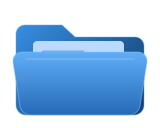

SEU ESPAÇO DE TRABALHO
Meus projetos
Organize suas digitalizações. Dê dois cliques em uma pasta para começar.

Seu primeiro projeto começa aqui
Crie uma pasta, configure o scanner e organize seus documentos.
Carregando sua conta local…
Digitalize documentos pelo serviço NAPS2 WebScan, visualize suas páginas e salve em JPEG. Entre com sua conta local para começar.
Organize suas digitalizações. Dê dois cliques em uma pasta para começar.

Crie uma pasta, configure o scanner e organize seus documentos.
Pronto para digitalizar.
Digitalize ou escolha uma página ao lado para visualizar.